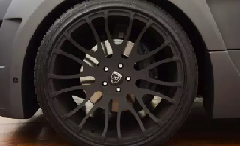

凯博思国际汽修服务中心
凯博思国际汽修服务中心
公司介绍 COMPANY PROFILE
公司介绍
COMPANY PROFILE
KBS凯博思国际汽修服务中心位于天津市空港经济区汽车园中路，是一家技术力量雄厚的中新合资的企业，新加坡总部具备超过15年的中高端汽车的一站式服务经验。
KBS主要服务项目包括平行进口车销售、汽车保养、配件零售、事故车维修、车辆改装、汽车美容、车险服务、道路救援等。来自新加坡的高级技师团队精通国内外先进的管理经验，拥有丰富的中高端汽车维修技术，为客户提供一整套全系列车型的解决方案。
VR 虚拟体验
GO
维修保养 MAINTENANCE
维修保养
MAINTENANCE
-
价格优惠 凯博思为每一位客户提供超越4S店的服务品质和低于4S店的优惠价格，维修保养性价比更高。
-
配件纯正 凯博思坚持“原厂配件”，正品保障，配件均有编码可查询，为您的爱车提供原生态装备，完美如初，提升您的驾驶体验。
-
服务贴心 凯博思拥有专业的设备、科学合理的场地规划，技艺精湛、经验丰富的专业团队，精心呵护每台进场车辆，为客户提供贴心的服务。
-
 设备领先 凯博思具备一整套全面的汽车系统检测设备及多种高精尖原装电脑检测仪器，可为客户的各种中高端汽车提供完善的技术诊断及支持， 做出全面的售后维修保养与事故车维修服务。
设备领先 凯博思具备一整套全面的汽车系统检测设备及多种高精尖原装电脑检测仪器，可为客户的各种中高端汽车提供完善的技术诊断及支持， 做出全面的售后维修保养与事故车维修服务。 -
技术专业 凯博思拥有一流的专业技术团队，高级技师均来自新加坡总部，专注于中高端全系列车型的一整套解决方案，全天候为您的爱车保驾护航。
设备领先
凯博思具备一整套全面的汽车系统检测设备及多种高精尖原装电脑检测仪器，可为客户的各种中高端汽车提供完善的技术诊断及支持， 做出全面的售后维修保养与事故车维修服务。
设备领先
凯博思具备一整套全面的汽车系统检测设备及多种高精尖原装电脑检测仪器，可为客户的各种中高端汽车提供完善的技术诊断及支持， 做出全面的售后维修保养与事故车维修服务。
车险服务 VEHICLE INSURANCE
车险服务
VEHICLE INSURANCE
●保险销售
方便
快捷
贴心
●一站式
保险服务
凯博思可为车主提供方便、快捷、贴心的保险销售、定损、维修及理赔全程一站式服务，为车主一次性办妥全部理赔手续，可为您的爱车定制专属的保险方案，并为车主提供 24 小时报险、理赔及法务咨询服务，节省您的宝贵时间。
道路救援 EMERGENCY ASSISTANCE
道路救援
EMERGENCY ASSISTANCE
凯博思为天津市内六区提供道路紧急救援服务，包括接电送油、紧急加水、更换轮胎、现场抢修、拖车牵引、吊装救援等服务，为您的出行带来毫无后顾之忧的安心惬意。凯博思道路救援的专业人员会及时为您提供所需帮助，让您和爱车不再孤立无援。
（交通管理部门或道路管理机构不允许社会救援车辆驶入的部分高速公路、隧道、大桥、高架道路等路段暂不提供救援服务，感谢您的配合）
 接电送油
接电送油 紧急加水
紧急加水 更换轮胎
更换轮胎 现场抢修
现场抢修 拖车牵引
拖车牵引 吊装救援
吊装救援
24小时道路救援热线:15620310873
当您需要救援时，请拨打我们的24小时道路救援热线
车辆改装 VEHICLES MODIFICATION
车辆改装
VEHICLES MODIFICATION
-  23时锻造圈搭配高性能跑胎
- 换装高低软硬可调式避震器组
- 换装Hamann排气系统
联系我们 CONTACT
联系我们
CONTACT
凯博思国际汽修服务中心
KBS Motorsports
地 址：天津市空港经济区汽车园中路8号二手车市场D05/06号展厅（300308）
联系电话：（8622）88953399
扫一扫
关注我们的微信公众号
即享在线预约取送车服务
加入VIP享受更多优惠
凯博思国际汽修服务中心
返回顶部